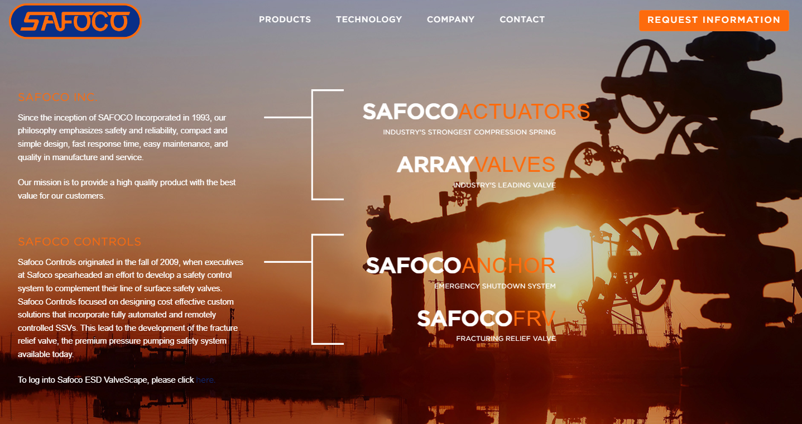
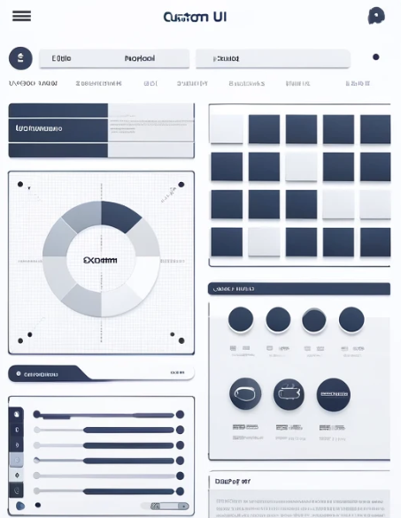
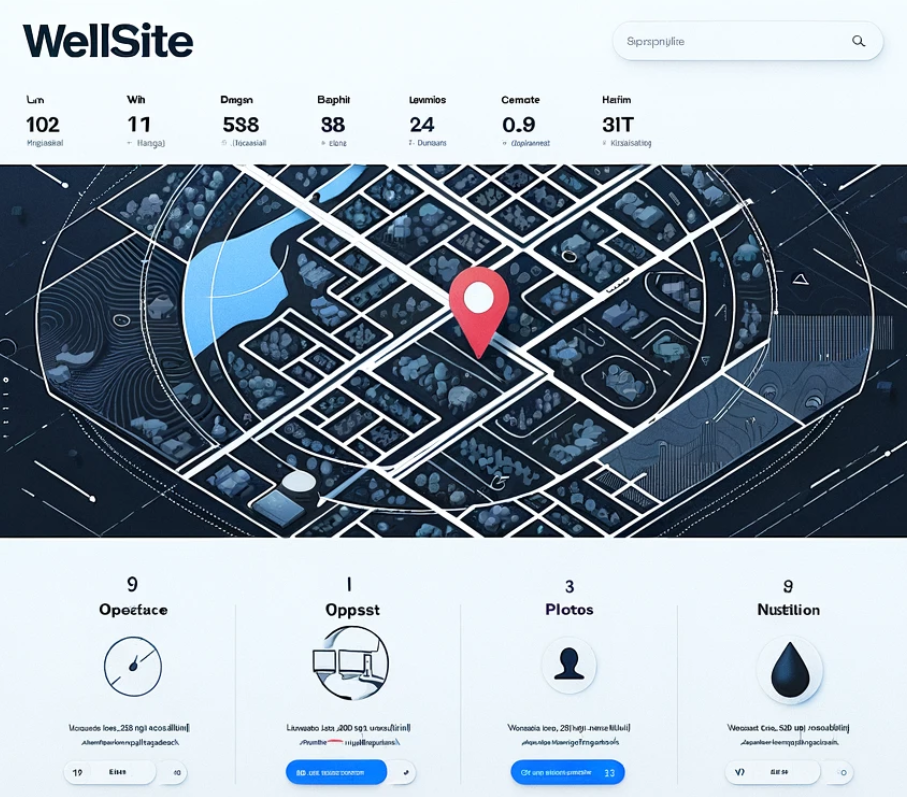

<div class="d-flex justify-content-center container my-5 non-scroll">
  <div class=" ">
    <div class="card">
      <div
        class="card-header text-center bg-black text-danger py-3 fw-bold fs-3"
      >
        ABOUT ME
      </div>
      <div class="card-body">
        <div class="row">
          <div
            class="col-md-8 d-flex justify-content-center align-items-center"
          >
            <p class="text-wrap fs-5 text-center" style="width: 46rem">
              I am a dedicated Frontend Developer with 2 years of experience at
              Harman Connected Services Corporation India Pvt Ltd. Proficient in
              Angular, HTML5, CSS3, JavaScript, and TypeScript, I have a proven
              track record of creating dynamic and responsive user interfaces.
              Passionate about technology, I thrive in collaborative
              environments and am always eager to learn and adapt to new
              challenges. With a strong foundation in Electronics Engineering
              and a knack for problem-solving, I am committed to delivering
              high-quality solutions and driving innovation in the field of
              frontend development.
            </p>
          </div>
          <div class="col-md-4 text-center">
            
          </div>
        </div>
      </div>
    </div>

    <!-- Second Div -->

    <div>
      <div class="row my-5 mx-2 d-flex justify-content-between">
        <div class="col-md-4">
          <div class="card-body">
            <h5 class="card-title text-danger fw-medium fs-4 mb-3">
              Embracing Diversity in Learning and Experience
            </h5>
            <p class="card-text">
              My commitment to personal growth extends beyond traditional
              boundaries, encompassing a diverse range of interests and
              experiences. Through yoga, meditation, and a passion for
              mathematics, I foster a well-rounded approach to life, blending
              physical wellness with mental acuity. Engaging with literature
              further enriches my understanding of the world, providing avenues
              for introspection and exploration.
            </p>
          </div>
        </div>
        <div class="col-md-4">
          <div class="card-body">
            <h5 class="card-title text-danger fw-medium fs-4 mb-3">
              Cultivating Ethical Excellence and Integrity
            </h5>
            <p class="card-text">
              At the core of my journey lies a steadfast commitment to ethical
              excellence and integrity. I believe in celebrating the successes
              of others and fostering a culture of collaboration and support.
              Rejecting jealousy, I embrace a mindset of abundance, recognizing
              that there is room for everyone to succeed. With a strong moral
              compass guiding my actions, I navigate challenges with grace and
              integrity, upholding the values of honesty, respect, and empathy.
            </p>
          </div>
        </div>
        <div class="col-md-4">
          <div class="card-body">
            <h5 class="card-title text-danger fw-medium fs-4 mb-3">
              Integrating Mindfulness and Intellectual Curiosity
            </h5>
            <p class="card-text">
              Mindfulness and intellectual curiosity serve as cornerstones of my
              personal philosophy, shaping my approach to learning and growth.
              By embracing the diversity in learning and experience, I cultivate
              resilience and adaptability, ensuring I thrive in both personal
              and professional realms. Through unwavering ethical conduct, I
              strive to inspire trust and confidence in my interactions, both
              personally and professionally.
            </p>
          </div>
        </div>
      </div>
    </div>

    <!-- Third Div -->
    <div class="row bg-black rounded-3 p-1">
      <h2 class="text-center text-danger fw-medium fs-2 bg-black py-2">
        PROJECTS
      </h2>
      <div class="container bg-white rounded py-5">
        <div class="d-flex justify-content-around">
          <div class="col-md-7">
            <carousel>
              <slide>
                
                <div
                  class="carousel-caption d-none d-md-block text-light"
                  style="backdrop-filter: blur(7px)"
                >
                  <h3>Safoco</h3>
                  <p>
                    Implemented features to send email alerts, ensuring
                    subscribers stay informed about activities in the oil field
                    within their own organization.
                  </p>
                </div>
              </slide>
              <slide>
                
                <div
                  class="carousel-caption d-none d-md-block text-dark"
                  style="backdrop-filter: blur(7px)"
                >
                  <h3>Custom UI</h3>
                  <p>
                    Created customizable dashboard interfaces for
                    administrators, improving data visualization and user
                    interaction.
                  </p>
                </div>
              </slide>
              <slide>
                
                <div
                  class="carousel-caption d-none d-md-block text-dark"
                  style="backdrop-filter: blur(7px)"
                >
                  <h3>Wellsite</h3>
                  <p>
                    Developed a web application to streamline the management of
                    oil extraction processes, providing essential data access.
                  </p>
                </div>
              </slide>
            </carousel>
          </div>

          <div class="col-md-4 bg-white fs-5 mb-3">
            <div class="col-md-12">
              <ul class="list-unstyled">
                <li class="mb-3">
                  <strong class="text-danger"
                    >Real-Time Projects (Angular):</strong
                  ><br />
                  Implemented two real-time projects, Safoco and Custom UI,
                  using Angular. Also developed Wellsite, an internal project,
                  for efficient management of oil extraction processes.
                </li>
                <li class="mb-3">
                  <strong class="text-danger">Movie Search App:</strong><br />
                  Developed a Movie Search App by integrating the TMDB API.
                </li>
                <li class="mb-3">
                  <strong class="text-danger"
                    >Basic Projects (HTML, JS, CSS):</strong
                  ><br />
                  Created various basic projects, including a Todo App with
                  local storage support and a Password Generator Tool.
                </li>
              </ul>

              <p class="mt-3">
                For more details, visit the
                <span
                  routerLink="/portfolio"
                  style="
                    text-decoration: underline;
                    color: red;
                    cursor: pointer;
                  "
                  >Portfolio</span
                >
                section.
              </p>
            </div>
          </div>
        </div>
      </div>
    </div>
  </div>
</div>
